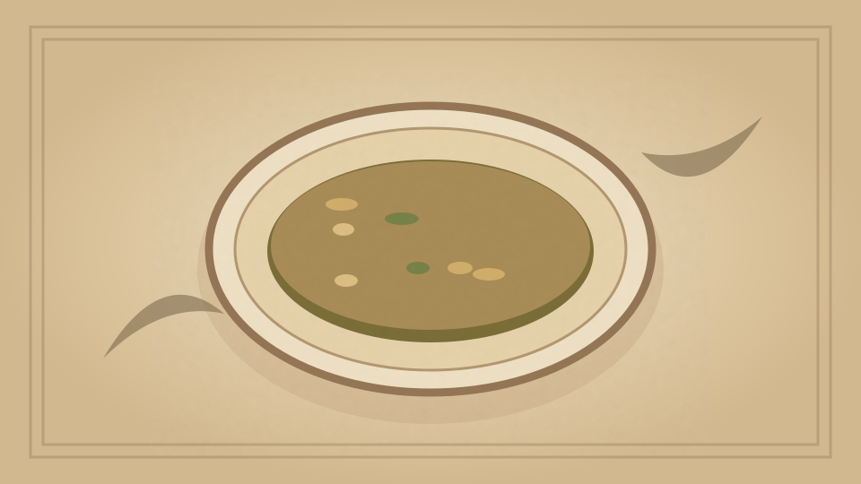

1910 · Fannie Merritt Farmer · SOUPS
Chicken Soup with Wine
The Boston Cooking-School Cook Book

Historical Recipe
The following text is extracted from the 1910 edition, retaining historical terminology and quantities.
Original Ingredients & Directions
3 lb. fowl
2 quarts cold water
2 slices carrot
1 tablespoon salt
½ teaspoon peppercorns
1 onion, sliced
2 stalks celery
Bit of bay leaf
2 tablespoons Sauterne wine
1 teaspoon beef extract
1 cup cream
Salt
Pepper
Wipe and cut up fowl. Cover with water, and add carrot, salt, peppercorns, onion, celery, and bay leaf. Bring 119 quickly to boiling-point, then let simmer until meat is tender. Remove meat and strain stock. Chill, remove fat, reheat, and add wine, beef extract, and cream. Season with salt and pepper.
Automatically extracted transcription; editorial verification pending. Historical instructions may not meet modern food-safety standards.